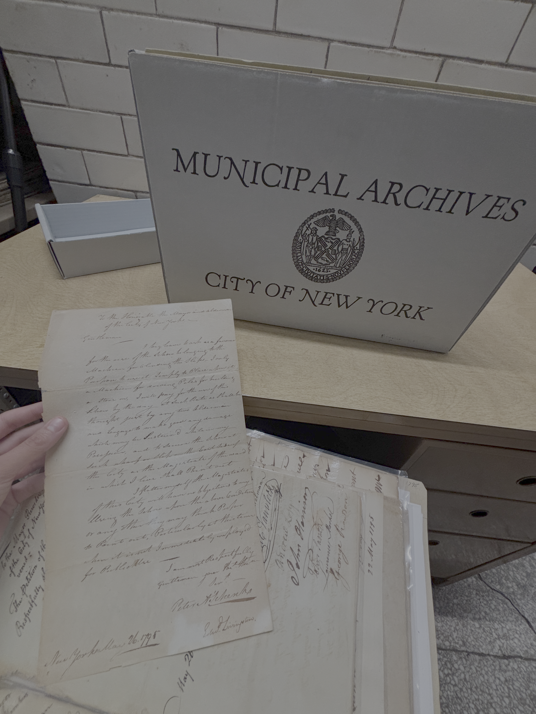

deanna dibenedetto

current school & work experience:
- Reference & Archives Intern, New York City Municipal Archives
September 2026 to Present
- Assist in providing reference services for the public as well as internal government agencies
- Aid with inquiries to the archives, ranging from vital records to historical, legal, and research requests
- Support archivists during archival processing, appraisals, digitization, and conservation
- Licensed New York City Tour Guide
September 2026 to Present
- MSLIS Student at Pratt Institute
August 2026 to Present
- Coursework: Archival Theory & Practice, Knowledge Organization, Information Technology